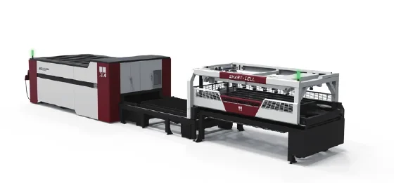
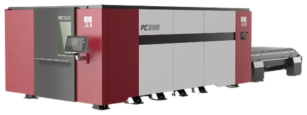
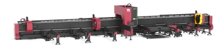
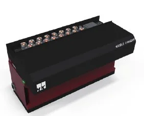
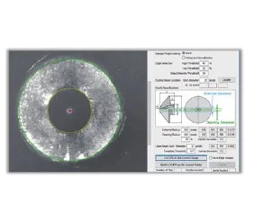
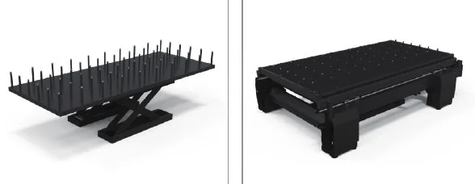
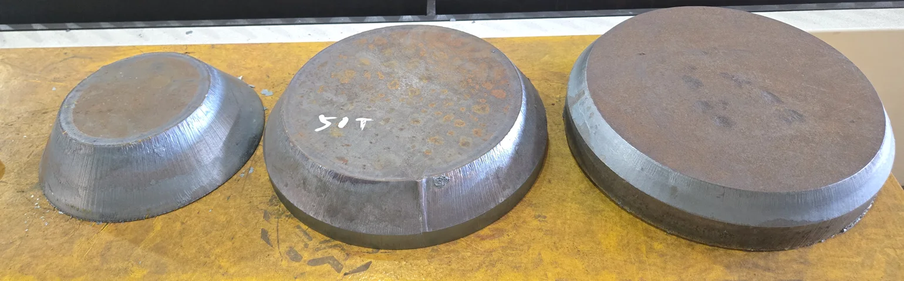

製品情報 · HK LASER
ファイバーレーザー切断機
1990年設立のレーザー加工機専業メーカー、HK LASER & SYSTEMSの切断機を取り扱っています。板材用9機種とパイプ用2機種から、材料の形状とサイズに合わせてご提案し、導入後も日本国内でサポートします。
HK LASER & SYSTEMS
レーザー加工機ひとすじのメーカー
1990年の設立以来、2次元レーザー加工機に専念してきた専業メーカーです。世界で3,000台を超える納入実績があり、日本では名古屋に拠点を置いています。
1990
設立
36
年間、レーザー加工機に専念
3,000+
台の納入実績（世界）
35
台／月の最大生産能力
コストと仕上がりに効く、HKの技術
毎日のランニングコストと、後工程の手間を減らすための独自技術です。

ミックスガス切断
窒素と酸素を最適な比率で混合。6 mmを超える軟鋼を、バリを抑えながら約10%速く切断でき、後工程を減らせます。

低圧窒素切断
独自のズームヘッドとチャンバーノズルにより、7〜8 barの低圧で窒素切断。メーカー試験では窒素の消費量を約60%削減しています。

ハニカム構造フレーム
軽さと剛性を両立した高強度フレーム。変形を抑え、高速加工でも精度を保ちます。

直観的な操作画面
タッチ操作の分かりやすい画面。中断後の再切断や条件設定も簡単で、オンラインで更新できます。

ファイバーレーザーの省エネ性
CO2レーザー（4 kW）と比べ、ファイバー（8 kW）は消費電力を約22%抑え、薄板では最大約5倍の速度で切断します（メーカー比較値）。

段階的に進められる自動化
スマートローダー、スマートセル、スマートタワー、8段自動化タワーまで。材料の投入から搬出・保管まで、必要な範囲から自動化できます。
数値はメーカー公表の試験・比較値です。材質、板厚、加工条件により異なります。
HK LASERの切断機
加工する材料の形状を選び、写真と仕様を見比べてください。

投入・切断・仕分け
S-Matic K315
板材の投入、レーザー切断、部品の仕分け、残材の回収を一つのラインで行います。
- 加工サイズ
- 3,000 × 1,500 mm
- 特長
- 投入から仕分けまで全自動
- 製品サイズ
- 15,593 × 6,158 × 3,679 mm

引き出し式傾斜テーブル
KUBE 1212 FIBER
小型板材の加工に適した正方形のテーブルを備え、前面から材料を出し入れできます。
- 加工サイズ
- 1,240 × 1,240 mm
- 特長
- 引き出し式傾斜テーブル
- 製品サイズ
- 4,010 × 2,210 × 2,180 mm

1・2テーブル仕様
FL 2512 FIBER
手動で引き出す1テーブル仕様と、昇降式シャトルを使う2テーブル仕様から選べます。
- 加工サイズ
- 1,240 × 2,490 mm
- 特長
- 1テーブル／2テーブルを選択
- 製品サイズ
- 4,800 × 2,320 × 2,680 mm

サイドローディング
FL 3015 FIBER
大きな側面扉から定尺の板材を出し入れするレーザー切断機です。
- 加工サイズ
- 3,048 × 1,524 mm
- 特長
- 側面扉からの材料搬入
- 製品サイズ
- 4,908 × 9,290 mm

前面・側面からの作業
RS3015 FIBER
前面と側面の扉から、加工室内のワークに手が届きます。
- 加工サイズ
- 3,048 × 1,524 mm
- 特長
- 2.5 Gの高速モーション
- 製品サイズ
- 2,270 × 11,250 mm

長尺板材・両開き扉
FS Series
板材の長さに合わせて加工範囲を選ぶシリーズです。写真はFS3015 FIBERです。
- 加工サイズ
- 3,048 × 1,524 – 8,250 × 2,540 mm
- 特長
- テーブルサイズ6機種
- 製品サイズ
- 3,300 × 11,218 mm（FS3015）

大型鋼板用ガントリー
FO Series
大型鋼板の上をガントリーが移動する開放型の切断機です。写真はFO12025 FIBERです。
- 加工サイズ
- 12,192 × 2,540 – 30,480 × 3,048 mm
- 特長
- 大型鋼板・ベベル加工対応
- 製品サイズ
- 6,200 × 21,000 mm（FO12025）

水平シャトルテーブル
HD Series
水平シャトルテーブルを備えた板材用レーザー切断機です。掲載機種はHD3015です。
- 加工サイズ
- 3,048 × 1,524 – 12,000 × 4,000 mm
- 特長
- 水平シャトルテーブル
- 製品サイズ
- 2,850 × 8,604 mm（HD3015）

品質重視・価格を抑えた主力機
FC3015 FIBER
切断品質を最優先にしながら、価格を大きく抑えた3015クラスの切断機です。昇降式シャトルテーブルで材料を交換します。
- 加工サイズ
- 3,048 × 1,524 mm
- 特長
- 品質重視・価格を抑えた主力機
- 製品サイズ
- 3,283 × 10,632 mm

丸管 Ø12–273 mm
TL6527-S
丸管・角管を加工するパイプ用レーザー切断機です。日本向け6 kW仕様は、外径12〜273 mmの丸管に対応します。
- 加工サイズ
- Ø12–273 mm × 6,500 mm
- 特長
- デジタルチャックで高速加工
- 製品サイズ
- 12,500 × 4,700 × 2,600 mm

丸管 Ø40–360 mm
TL9036-X
大径・長尺のパイプに対応するレーザー切断機です。丸管は外径360 mmまで、角管は250 mm角まで加工できます。
- 加工サイズ
- Ø40–360 mm × 9,000 mm
- 特長
- 3Dベベル・3+1ツインチャック
- 製品サイズ
- 20,500 × 6,500 × 3,200 mm
数値は記載の機種・構成に対応します。設置条件やオプションはお見積もりの際にご確認ください。
自動化システムとオプション
加工機に組み合わせて、材料の投入・搬出・保管や段取りを省力化できます。
自動化システム

スマートローダー
材料を自動で投入。
スイングアーム式とトランス式があります。
対応テーブル 3015・4015・4020。
スマートセル
材料の投入と加工品の搬出を自動化。
最大積載 3,000 kg。

スマートタワー
投入・搬出・保管を一体化したストッカー。
棚は8段。

8段自動化タワー
8段のタワーと加工機を連結。
1段あたり最大 2 t。
配置はご要望に合わせて設計します。
オプション

スマートノズルチェンジャー
ノズル12本を収納し、自動で交換。
停止時間を短縮します。

ビームチェッカー
ビームの中心を光学的に確認し、ずれによる不具合を防ぎます。

スマートボールトランス
材料の出し入れを容易にし、キズを防ぎます。
板厚 20 mm まで。

スマートラック
周辺機器を本体上部に配置し、設置スペースを節約します。

リバースタイプ
扉・テーブル・操作位置を左右反転したレイアウトです。
ミックスガス切断
酸素と窒素を最適な比率で混合。
バリを減らし、後工程を少なくします。
低圧窒素切断
ズームヘッドと専用ノズルにより、7〜8 barの低圧で窒素切断。
窒素のコストを抑えます。

インクジェットマーキング
対応内容はお問い合わせください。

現場に合わせたカスタマイズ
標準品で対応できないサイズや仕様もご相談ください。
対応する機種や仕様は組み合わせにより異なります。詳しくはお問い合わせください。
3D BEVEL CUTTING
3Dベベルカットで、開先加工まで1台で
ヘッドを傾けて切断する3Dベベルカットに対応。切断と同時に開先を付けられるため、溶接前の機械加工やグラインダー作業を減らせます。
- ベベル角度 0〜45°に対応
- 厚板の開先切断にも対応（写真は板厚50 mmのサンプル）
- 対応機種：FO Series（板材）、TL9036-X（パイプ）
加工できる角度と板厚は、材質や出力によって異なります。詳しくはお問い合わせください。
ベベルカットについて相談する

ベベルカットの加工サンプル
機種の選び方
光ファイバーで伝送したレーザー光を加工ヘッドで集光し、金属を局所的に溶かします。ノズルからのアシストガスが溶融金属を排出し、NC制御で図面の輪郭に沿って切断します。板材用は平面上を加工し、パイプ専用機はチャックで管を保持・回転させて加工します。
| 加工・搬送条件 | 候補機種 |
|---|---|
| 小型板材、正面から搬入 | KUBE1212 |
| 板材、手動または2段テーブル交換 | FL2512 |
| 側面からのアクセス、搬入動線に合わせた配置 | FL3015 |
| 定尺板、切断速度とテーブル仕様を比較 | RS3015 / FS / HD / FC3015 |
| 切断部品の自動仕分け | S-Matic K315 |
| 長尺の鋼板 | FO |
| 丸管・角管、径と1本当たり質量で選定 | TL6527-S / TL9036-X |
見積もりには、材質、板厚または管の断面寸法、素材長、月間の加工量をご記入ください。
レーザー出力別の最大切断板厚
| レーザー出力 | 軟鋼 | ステンレス鋼 | アルミ | 銅 | 黄銅 |
|---|---|---|---|---|---|
| 2.5 kW | 16 mm | 9 mm | 8 mm | 4 mm | 6 mm |
| 3 kW | 16 mm | 11 mm | 10 mm | 6 mm | 8 mm |
| 4 kW | 20 mm | 13 mm | 12 mm | 6 mm | 10 mm |
| 6 kW | 25 mm | 19 mm | 15 mm | 8 mm | 12 mm |
| 8 kW | 30 mm | 23 mm | 21 mm | 8 mm | 12 mm |
| 10 kW | 30 mm | 23 mm | 21 mm | 10 mm | 15 mm |
| 12 kW | 30 mm | 23 mm | 21 mm | 10 mm | 15 mm |
| 15 kW | 35 mm | 26 mm | 24 mm | 12 mm | 15 mm |
板厚の単位はmmです。数値は目安であり、材質、表面状態、ガス品質や加工環境によって切断結果は変わります。
切断板厚は条件により異なる場合があります。機種選定の際は、必ず専門スタッフにお問い合わせください。 お問い合わせはこちら ›
CAD/CAM
今お使いのCAD/CAMと、つなげて使える
HKのレーザー加工機は、板金用CAD/CAM「MetaCAM」に対応しています。他社のソフトで作成した展開データを活かしながら、切断のプログラムを作成できます。
他社製ベンダーをお使いの工場でも、MetaCAMを介してHKの加工機を今の工程に接続できます。曲げ工程はそのままに、切断工程だけを増強・更新できます。
連携できるデータの範囲は、ソフトのバージョンや構成により異なります。導入前に現在の環境をお知らせください。記載の社名・製品名は各社の商標または登録商標です。
連携について相談する導入後も、止めないためのサポート
導入後のサポートは、栄グローバルが日本国内で直接対応します。お問い合わせから現地訪問まで、国内の拠点から迅速に動きます。

遠隔モニタリング HK INSIGHT
稼働状況や履歴を、パソコンやスマートフォンでリアルタイムに確認できます。メーカーの監視チームも一緒に見守ります。

お問い合わせ当日の解決
サービスのお問い合わせの90%以上を、当日中に解決しています。

予防整備とオペレーター教育
保証期間の2年間に2回、エンジニアが訪問して点検します。オペレーター教育は、お客様の現場に伺って実施します。